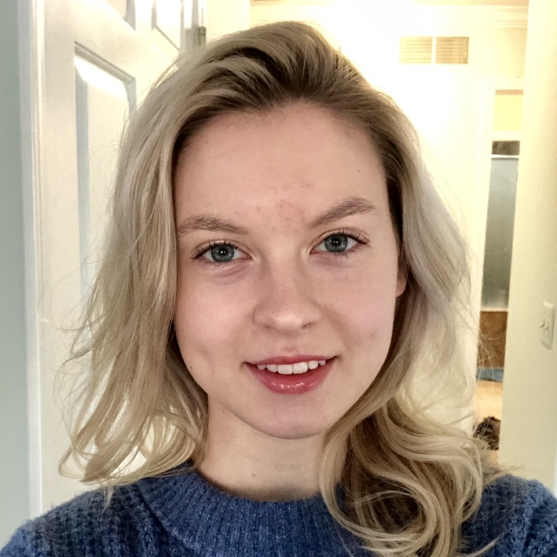

About Me

Hi my name is Gabbi. I'm from Michigan but born in Oklahoma. This is my first time studying anything related to coding. I came down to Kansas in order to attend University of Kansas in Lawrence. I double majored in Visual Arts with a concentration in jewelry/metalsmithing and Korean Language and Culture Studies. I studied there for two years before reevaluating my values and career goals and realised that it wasn't a great fit for me since I enjoy eating and being financially stable.
My downtime generally involves my boyfriend and I taking our dog to state parks in Missouri and Arkansas for hiking and swimming. When I have the time I enjoy drawing, painting and sculpting.
After completing this program I plan to get a job coding front end while my boyfriend finishes his paramedic and then we will move up to Michigan where my family lives. Then we live happily ever after, or at least thats the plan.